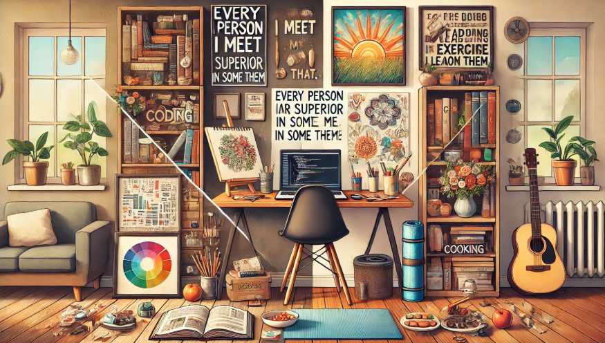

Liliana Ramos Vázquez
Desarrollo WEB - Explorando Nuestro Perfil como Desarrolladores

Objetivo: Explorar el perfil académico, profesional y personal de cada persona en el mundo del desarrollo de software de una manera reflexiva y dinámica.
Instrucciones: Cada participante debe responder de manera detallada las preguntas de cada sección. . Las respuestas pueden ser compartidas en un documento, foro o presentadas en grupo.
Índice de la actividad:
1. Formación y Aprendizaje
- ¿Cuál fue el motivo por el que elegiste desarrollo de software?
- ¿Cuál fue la materia o proyecto más desafiante en tu formación y cómo lo superaste?
- ¿Qué habilidades crees que son esenciales en la educación de un desarrollador y por qué?
Si bien, antes de entrar a la carrera no había tenido un acercamiento tan profundo ante el desarrollo de software, siempre he sido muy afín a la tecnología. Por lo que bastaron los pocos proyectos realizados previamente en programación para convencerme de que tenía toda esta área por descubrir y que además, disfrutaba. Asimismo, conversar tanto con personas dentro de la industria, como con aquellas más cercanas a mí, me hizo darme cuenta de que podía verme en un futuro dedicándome al desarrollo de tecnología.
Considero que la materia con el proyecto que representó el mayor desafío para mí fue Internet de las Cosas, ya que requería el uso de herramientas y elementos con los que no tenía experiencia previa, como el uso de la Raspberry Pi, MQTT, y la conexión entre los sensores con una página web. Sin embargo, el trabajo en equipo fue esencial, ya que, al contar con integrantes de diferentes carreras, pudimos unificar conocimientos para llevar a cabo el proyecto. Además, la investigación extra, aparte de las clases, fue clave para complementar la información y estar mejor preparados.
Hay diversas habilidades que considero importantes en la educación de un desarrollador. Si bien las habilidades técnicas, como la lógica y el pensamiento computacional, son fundamentales para resolver problemas y estructurar código de manera eficiente, también lo es el dominio de algoritmos y lenguajes de programación, ya que permiten adaptarse a distintos proyectos y tecnologías. Del mismo modo, las habilidades blandas juegan un papel clave. Desde mi punto de vista, en especial el trabajo en equipo y la comunicación son esenciales para una colaboración efectiva, así como el aprendizaje continuo y la adaptabilidad, que permiten mantenerse actualizado en un área en constante cambio.
2. Experiencia y Especialización
- ¿En qué área del desarrollo de software trabajas actualmente o te gustaría trabajar (frontend, backend, DevOps, IA, ciberseguridad, etc.) y por qué?
- ¿Has trabajado en algún proyecto que te haya marcado o del que estés especialmente orgulloso? Cuéntanos sobre él.
- Si pudieras aprender una nueva tecnología o lenguaje este año, ¿cuál sería y por qué?
Aunque actualmente no me especializo en un área en particular, en el futuro me gustaría explorar más sobre ciberseguridad, ya que considero que es un campo en constante crecimiento y será esencial en el desarrollo tecnológico, especialmente con el avance de la inteligencia artificial, por lo que me interesa bastante poder conocer e idear las soluciones para la seguridad en medios digitales. También me encantaría explorar más el frontend, ya que lo que he aprendido hasta el momento me ha parecido muy interesante, tanto la parte del diseño, como la funcionalidad detrás de cada página web. Además de que disfruto ver en tiempo real los resultados de cada programa.
Durante la carrera, el proyecto que más impacto ha tenido en mí fue precisamente el de Internet de las Cosas, en el cual desarrollamos un elevador inteligente diseñado para implementarse en distintos tipos de edificios con acceso controlado. Su principal objetivo era mejorar la seguridad y prevenir riesgos, ya que incorporaba sensores de temperatura, vibración, humo, humedad, así como una cámara de monitoreo y un sistema RFID para la identificación de usuarios. Gracias a estos elementos, el sistema podría detectar posibles peligros o situaciones de emergencia y restringir el acceso únicamente a personas registradas en la base de datos.
Además, desarrollamos una página web con dos tipos de perfiles. El administrador podría monitorear en tiempo real los datos de los sensores, visualizar la transmisión de la cámara y gestionar los accesos de los usuarios, mientras que el usuario solo tendría acceso a ver el piso al que sería dirigido y consultar el historial de sus propios accesos. Para la distribución del trabajo en equipo, cada integrante se encargó de una parte específica del proyecto, a mí en lo personal me tocó la parte del desarrollo de la página web y la integración con los sensores de manera digital. Finalmente el proyecto resultó exitoso y realmente disfruté el proceso.
Si pudiera aprender una nueva tecnología o lenguaje este año, me gustaría profundizar en el campo de la inteligencia artificial. Aunque estoy en los primeros años de mi carrera y todavía no soy experta en nada, considero que la IA tiene un enorme potencial y es una de las áreas con mayor crecimiento en el ámbito tecnológico.
La inteligencia artificial tiene un impacto significativo, ya que va desde optimizar procesos hasta generar soluciones nuevas, y creo que aprender sobre ella me ofrecerá muchas oportunidades en el futuro. Además, este campo involucra diversas herramientas y lenguajes, lo que me permitirá seguir ampliando mis conocimientos de manera general.
3. Forma de Trabajar y Mentalidad
- ¿Eres más de trabajo en equipo o prefieres trabajar solo? ¿Por qué?
- ¿Cómo manejas los errores o bugs en tu código? ¿Tienes alguna estrategia personal para resolver problemas?
- ¿Cuál es tu filosofía cuando trabajas en código de otros? (Ejemplo: ¿Prefieres refactorizar todo, respetar la estructura inicial, proponer cambios graduales?)
Aunque disfruto trabajar sola, ya que me permite organizar mis tiempos a mi manera y adaptar el proceso a mi propio ritmo, he descubierto que cuando la colaboración se da en un ambiente de buena comunicación y armonía, prefiero trabajar en conjunto. Sin embargo, no siempre es fácil lograr una dinámica de trabajo ideal, por lo que en ocasiones si me he podido llegar a ver frustrada por la manera en que se llevan a cabo los proyectos, pero gracias a esto, poco a poco he podido aprender a adaptarme no solo a las distintas situaciones, si no también a la forma de trabajo de las personas con las que colaboro.
Cuando encuentro errores en mi código, generalmente lo primero que hago es identificar bien el problema y qué pudo haber fallado, revisando línea por línea donde puede estar el error. Después, suelo dividir el problema en partes más pequeñas para que sea más fácil revisar cada una por separado, además de documentar mucho el proceso de los programas que genero, ya que esto me permite registrar cada paso de manera más organizada y poder detectar posibles errores más fácilmente. Pero definitivamente, de tener la posibilidad, me gusta preguntar a alguien más y escuchar diferentes opiniones que puedan ayudarme a encontrar una solución más eficiente.
Cuando trabajo en el código de otras personas, me gusta documentar detalladamente todo lo que hago, ya sea que agregue o elimine elementos. Esto me parece importante para mantener un registro claro de los cambios y facilitar la comprensión del código para otros. Además, prefiero respetar la estructura inicial del código para no hacer cambios tan significativos que puedieran afectar el funcionamiento o mantenimiento del código, por lo que voy haciendo modificaciones graduales, asegurándome de que cada cambio no altere la parte general del proyecto.
4. Tecnología y Tendencias
- ¿Qué herramienta, librería o framework descubriste recientemente y te sorprendió?
- ¿Sigues alguna fuente de información sobre tecnología (blogs, podcasts, newsletters, canales de YouTube)? ¿Cuáles recomiendas?
- ¿Qué tendencia en tecnología crees que cambiará la industria en los próximos 5 años?
Recientemente descubrí GitHub, en la cual, antes no tenía tan claro cómo los desarrolladores ordenaban y protegían su código, pero me sorprendió lo útil que es esta plataforma para organizar proyectos y trabajar en equipo. Además, me gusta la opción de explorar en los repositorios de otros y aprender de su código. Si bien, no soy una experta aún, definitivamente es una herramienta que me gustaría seguir utilizando.
Actualmente no consumo fuentes de información de manera constante, sin embargo, suelo buscar información o artículos cuando tengo curiosidad sobre algún tema en específico o cuando necesito aprender sobre una nueva herramienta o lenguaje.
Yo creo que la inteligencia artificial va a cambiar muchísimo la industria en los próximos cinco años, no solo porque automatiza cosas, sino porque cada vez se vuelve más parte de nuestro día a día. Desde asistentes más inteligentes hasta herramientas que ayudan a optimizar procesos en casi cualquier área, siento que esto solo va a crecer. También creo que la ciberseguridad se volverá todavía más importante, porque mientras más avanzamos en tecnología, más necesitamos también proteger nuestros datos y sistemas.
5. Un Toque Personal
- ¿Qué actividad o hobby fuera de la programación disfrutas y cómo crees que influye en tu forma de resolver problemas?
- Si no fueras desarrollador(a), ¿a qué te dedicarías?
- Comparte una frase, lema o enseñanza que te haya inspirado en tu vida o carrera.
Fuera de la programación, me gusta dedicarme a cosas como pintar, leer, hacer ejercicio, cocinar, ver películas o simplemente platicar. Para mí, estas actividades no solo son una forma de relajación, sino que también influyen en cómo enfrento los problemas. Estas actividades me ayudan a desconectarme y ver las cosas desde un ángulo diferente. Ya sea que exploten mi creatividad, o me ayuden a aclarar mi mente para enfrentar problemáticas o situaciones, son acciones que disfruto hacer en mi tiempo libre y me permiten asimismo conocerme un poco más.
Si no fuera desarrolladora, probablemente me hubiera dedicado a la arquitectura, ya que siempre me ha fascinado la historia del arte y el diseño, y veo a la arquitectura como una carrera muy completa. Sin embargo, también creo que la gastronomía podría haber sido una opción a considerar, ya que disfruto mucho de la cocina y el transfondo que hay en ella.
Una frase que me ha inspirado mucho últimamente es una de un libro que leí recientemente de Dale Carnegie, en Cómo ganar amigos e influir sobre las personas: "Toda persona que conozco es superior a mí en algún sentido, en ese sentido, aprendo de ella." Me parece una frase sumamente interesante porque me ayuda a mantener una mentalidad de principiante, siempre dispuesta a aprender de los demás. Me ha permitido valorar el conocimiento de cada persona y a encontrar enseñanzas en cada interacción, lo que me ha ayudado a crecer tanto en lo personal como en lo profesional.
